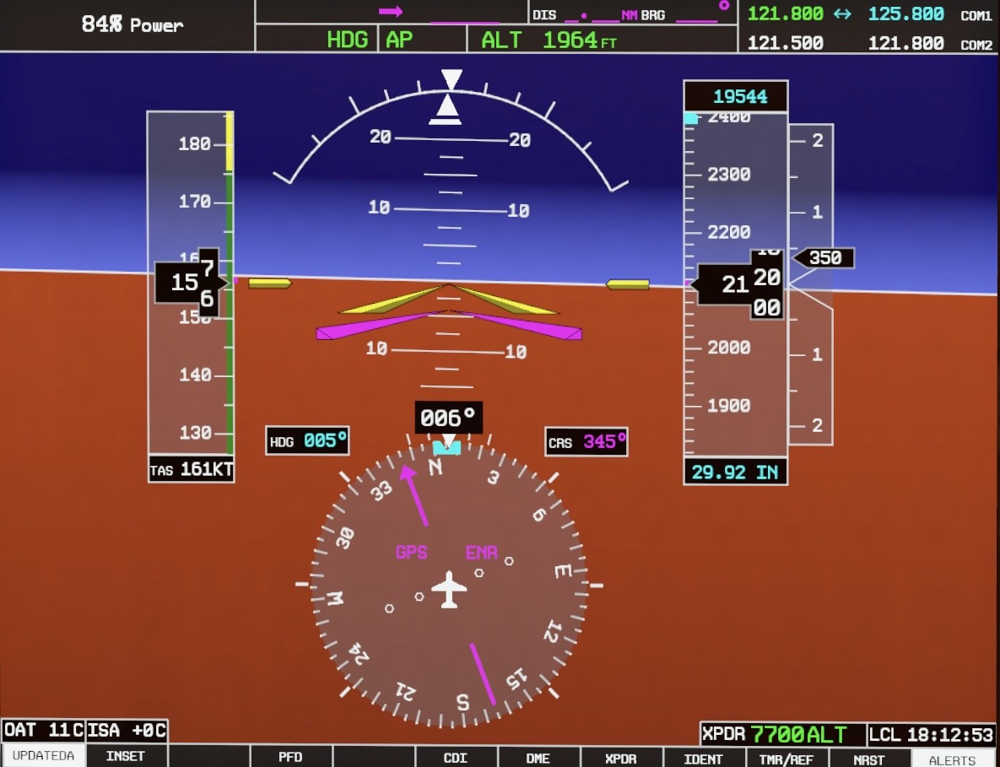

Navegación convencional
VOR1 / VOR2
ColorVerde
ReferenciaRadiales y cursos
RequiereFrecuencia e identificación
TO/FROMSí aplica
Reconoce cuándo el HSI está controlado por VOR, GPS o localizador antes de seguir cualquier indicación.



Explora la pantalla real. Pulsa los marcadores para identificar los datos necesarios antes de utilizar un radial.
VOR1 confirma que el CDI está controlado por NAV1 y no por GPS.
El localizador utiliza el receptor VLOC y por eso se presenta en verde. La etiqueta LOC1 identifica el guiado lateral de aproximación.
LOC1 confirma que NAV1 está recibiendo y presentando un localizador.
Observa la imagen y responde leyendo la etiqueta, el color y el uso.